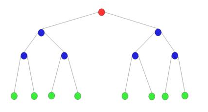
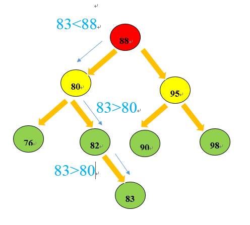

每个节点最多有两个叶子节点
在实际使用时会根据链表和有序数组等数据结构的不同优势进行选择。有序数组的优势在于二分查找，链表的优势在于数据项的插入和数据项的删除。但是在有序数组中插入数据就会很慢，同样在链表中查找数据项效率就会很低。综合以上情况，二叉树可以利用链表和有序数组的优势，同时合并有序数组和链表的优势，二叉树也是一种常用的数据结构

红色是根节点（root），蓝色是子节点也是父节点，绿色是子节点。其余的是线是边。节点和链表中节点一样都可以存放数据信息。树中的边可以用自引用表示，这种引用就是C/C++里面的指针。通常来说树就是顶部小，底部大，且树呈分层结构。root节点时第0层，以此类推，二叉树最多有两个节点
二叉树一个节点左子节点的关键字小于这个节点，右子节点的关键字大于或等于这个父节点。
创建一个树节点包括左节点引用和右节点引用
// 创建一个树的节点
// 每个node存放两个数据
// 一个左node引用和一个右node引用
class Node {
public int iData;
public double dData;
public Node leftNode;
public Node rightNode;
// 显示树节点信息
public void showNode() {
System.out.println("{ " + iData + "," + dData + " }");
}
}创建一个树结构，首先是向一个树中插入树节点。当一棵树为null时，数据项时从树的root节点处开始插入，之后的插入顺序是根据搜素节点顺序规则进行插入。具体规则是：如果数据项比父节点的数据项要小，则插在父节点的左节点（leftNode），如果比父节点的数据项要大，则将新的node插入在父节点右节点处（rightNode）
private Node root;
// 插入Node
// 插入之前需要判断是否为null
// 为null需要比较大小直到currentNode为null就插入
public void insert(int iData, double dData) {
// 创建node节点
Node newNode = new Node();
newNode.iData = iData;
newNode.dData = dData;
// 判断root node是否为null
if (root == null) {
root = newNode;
} else {
Node current = root;
Node parent;
while (true) {
// 保存当current变为null之前的那一个父节点
parent = current;
if (iData < current.iData) {
// 插入左节点
current = current.leftNode;
// 不断向左node寻找是否为null
if (current == null) {
parent.leftNode = newNode;
return;
}
} else {
// 插入右节点
current = current.rightNode;
if (current == null) {
parent.rightNode = newNode;
return;
}
}
}
}
}
在插入节点的过程中其实也是对tree遍历的过程，最终根据条件遍历左右节点为null时进行添加新的节点
查找关键字是树结构的一项重要操作项，在有序数组中通过二分排序效率非常高。在二叉树中的查找效率也比较高。因为二叉树的添加node的过程就是根据数据项的大小进行有序添加的，并不是毫无秩序的插入数据项。在有序的基础上进行查找关键字的效率就会快很多
// 在tree中寻找关键字
// 返回一个Node
// 显示这个Node
public Node find(int key) {
Node current = root;
while (current.iData != key) {
if (current.iData > key) {
current = current.leftNode;
} else {
current = current.rightNode;
}
if (current == null)
return null;
}
return current;
}树的最值查找在树中查找是比较容易的，因为从root开始查找，最小值只会出现所有父节点的左节点处，同样最大值只会出现在所有父节点的沿着最右节点搜素的最底层右节点处
// 查找树中的最大值和最小值
// 最小值存在于一棵树的最下层的最左node
// 最大值存在于一棵树的最下层的最右node
public Node[] mVal() {
Node minNode = null;
Node maxNode = null;
Node[] maxminVal = new Node[2];
Node current = root;//从树的顶部开始搜索
while (current != null) {
minNode = current;
current = current.leftNode;
}
maxminVal[0] = minNode;
current = root;
while (current != null) {
maxNode = current;
current = current.rightNode;
}
maxminVal[1] = maxNode;
return maxminVal;
}以上是通过node数组存放两个最值的方法
public static void main(String[] args) {
NodeTest tree = new NodeTest();
tree.insert(3, 3.333);
tree.insert(1, 1.111);
tree.insert(2, 2.222);
tree.insert(4, 4.444);
tree.insert(5, 5.555);
tree.insert(6, 6.666);
Node node = tree.find(3);
if (node == null) {
System.out.println("we can not find it");
} else {
node.showNode();
}
//查找tree中的最值
Node[] temp = tree.mVal();
temp[0].showNode();
temp[1].showNode();
}{ 3,3.333 }
{ 1,1.111 }
{ 6,6.666 }由于第一个插入节点就是在root节点处进行插入不管其数据项大小，该节点都是root节点，处于树的最高层
我的微信公众号，欢迎大家来撩！
原文链接：二叉树